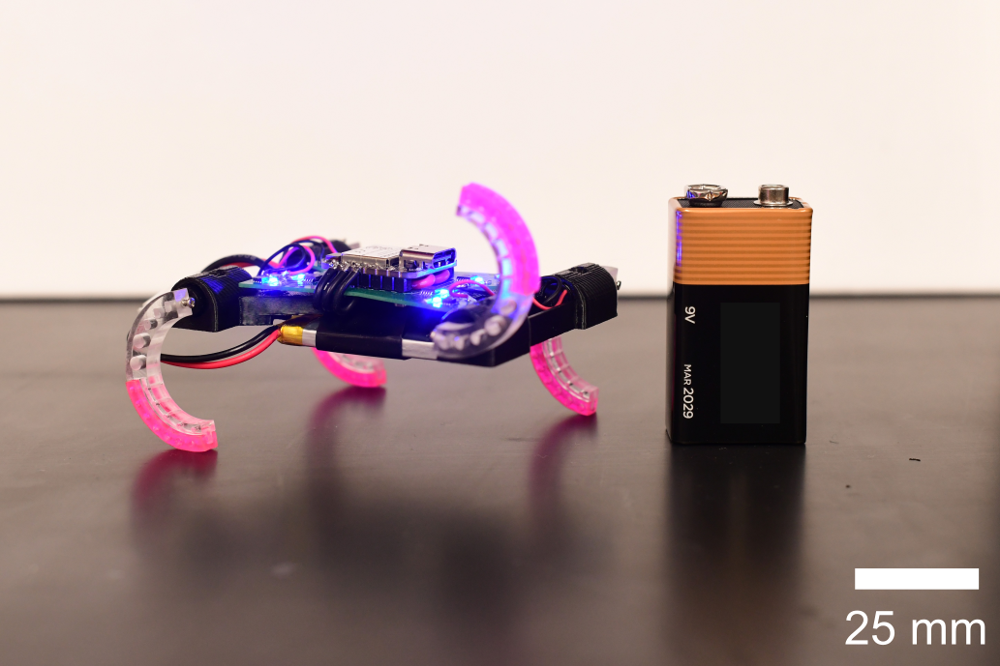
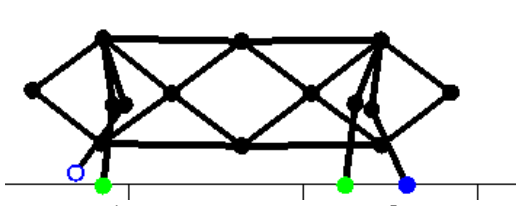
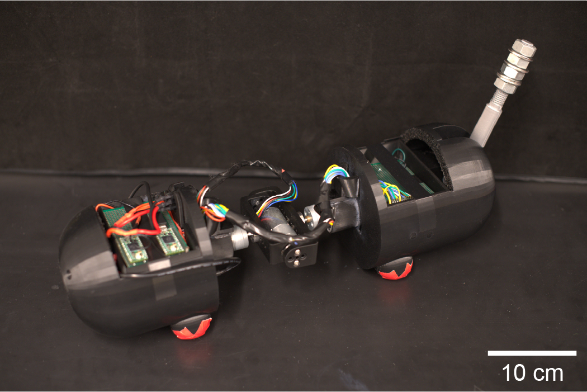
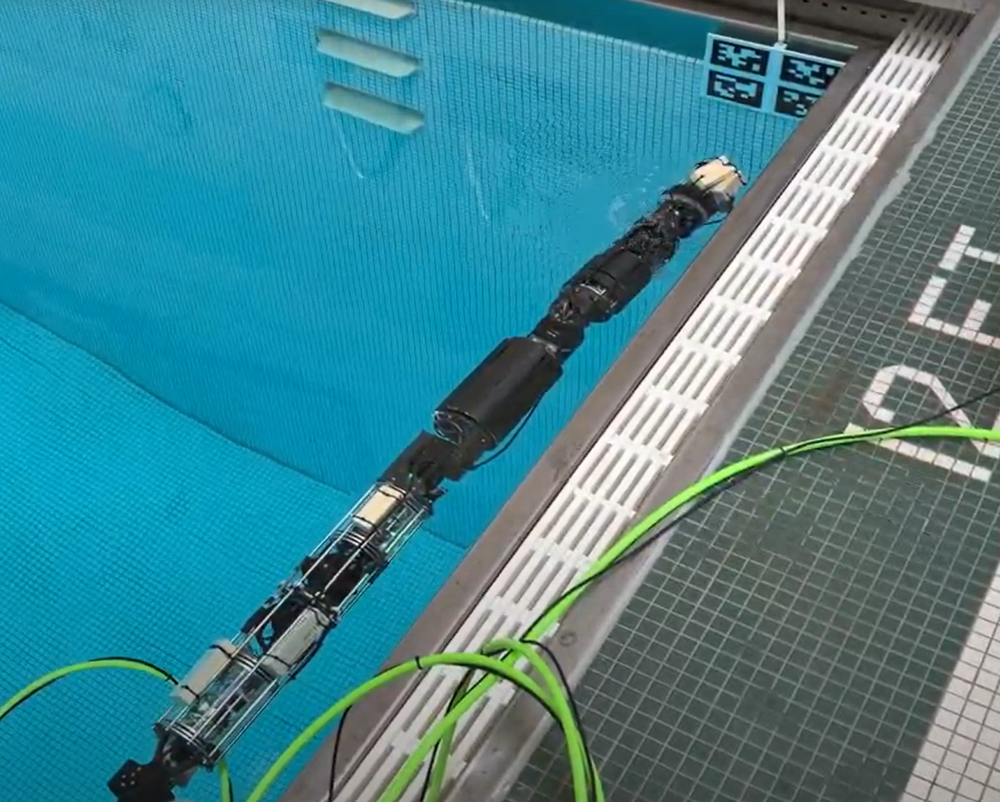

Legged locomotion
Closed-loop gait coordination, touchdown and liftoff timing, disturbance handling, and robust locomotion on small-scale platforms.
Carnegie Mellon University · Robotics · Bio-inspired locomotion
I am a robotics researcher interested in legged locomotion, small-scale robots, current-based proprioception, and bio-inspired control. My work combines robot design, embedded systems, simulation, and control to build machines that move robustly in constrained environments.
Current focus
Developing compact robotic systems that use limited sensing effectively, including current-based leg-state estimation, decentralized gait coordination, and biologically inspired mechanisms for locomotion and self-righting.
About
My research focuses on locomotion and coordination in robots inspired by animals. I am particularly interested in how sensing, mechanics, and control interact when hardware is small, lightweight, or otherwise constrained.
Recent work includes current-based stance/swing estimation in a centimeter-scale quadruped, whole-body quadruped coordination in simulation, cat-inspired aerial self-righting, and underwater robotic systems that rely on ROS and vision-based state estimation.
Research
Closed-loop gait coordination, touchdown and liftoff timing, disturbance handling, and robust locomotion on small-scale platforms.
Decentralized coordination, body–limb interaction, and biologically inspired strategies for efficient and adaptable motion.
Hardware, electronics, and sensing approaches tailored to strict limits in mass, power, volume, and computational budget.
Projects
A selection of recent research projects spanning legged, aerial, and underwater robotics.

Current-based proprioception · Small-scale locomotion
A fully untethered centimeter-scale quadruped that uses motor current as its primary source of proprioceptive leg feedback. A neural-network classifier estimates stance and swing, enabling closed-loop coordination without joint encoders or dedicated foot-contact sensors.

Decentralized coordination · Simulation
Research on emergent inter-limb coordination and whole-body locomotion using decentralized, animal-inspired control strategies without prescribing full foot trajectories.

Aerial self-righting · Bio-inspired robotics
A cat-inspired robot with an actuated spine and tail designed for aerial self-righting. The project explores how multiple reorientation strategies can be integrated on a single platform.

Underwater robotics · ROS
Research on an underwater snake robot involving ROS integration, vision-based state estimation, and mechanical design work related to waterproofing and field operation.
CV
A quick overview of my academic path and technical strengths.
M.S. in Mechanical Engineering
B.Eng. in Electrical, Information and Physics Engineering
I can also share my latest CV directly by email. You can reach me through the links below.
Contact
If you would like to talk about robotics research, collaboration, or graduate research opportunities, feel free to reach out.